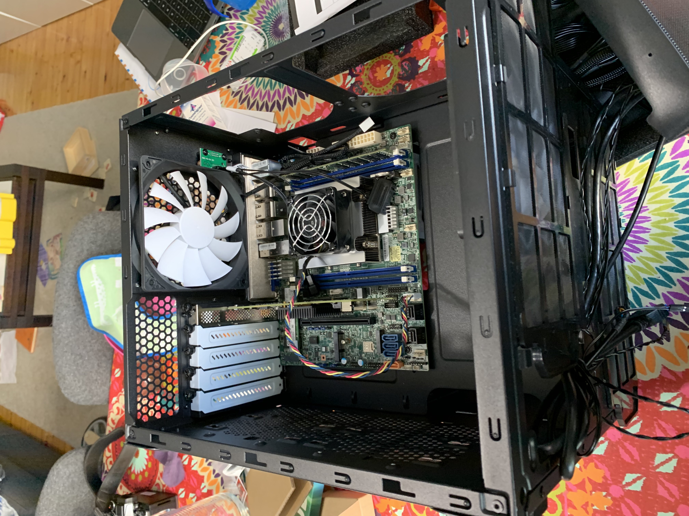
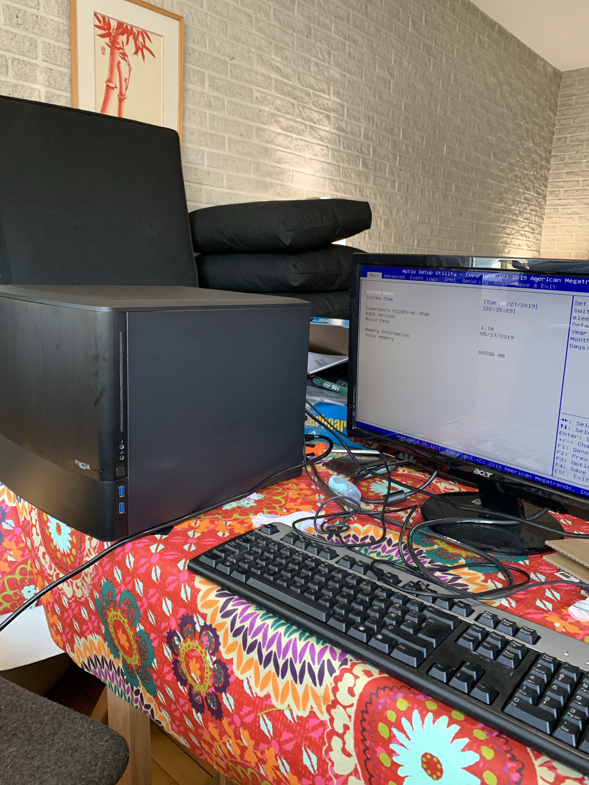

The goal
I have been using FreeNAS for almost a year, and I really enjoy it. I use it for some backups, file storage and for some of my favorite features of FreeBSD: jails. I have some jails installed, such as Nextcloud. Things were working fine and smoothly, until…
As much as I like FreeBSD, it’s not always things work well there coming from a Linux standpoint. I created a jail hoping to run ELK, but it was more complicate than it should be to run it on FreeBSD. It worked, but not the latest version. I could probably run a Linux jail, or just use FreeNAS virtualization features, but my current hardware was struggling.
At the same time, due to some tasks at work, I was investigating ESXi so I could run it on a Mac. I abandoned the whole thing, as apparently this isn’t well suported and life is too short. So I decided it was time to build a machine just for the task.
I always wanted to build my own machine, ever since I was a student and got a 486DX processor and a motherboard. A few years ago, a friend moving back home left his PC case behind, I thought I could maybe start there. None of those projects went ahead.
It is a very fun task to select what to buy, but it can easily get overwhelming. Which motherboard format? Which processor? Which case? Well, I wasn’t very sure of what I wanted, so I after reading a lot on the forums and other websites, I came down with these requirements:
- small form factor
- quiet
- 10GBe Network for some future-proofing
- plenty of SATA ports
The main use for this machine will be running ESXi and FreeNAS under a VM. I also want to run 3 or 4 VM’s, one as a redundant mail server, one to replace my jail-based ELK instanse, and the others to test stuff when needed.
What to buy?
Motherboard
I saw lots of motherboards for gaming that could possibly be used, but the feature set they have was not ideal for my project, as I won’t need a GPU, will probably need to be able to expand the memory, etc. By accident I found out the Supermicro motherboards, and decided to go for them.
Since I was hoping to build a PC aiming to run ESXi and FreeNAS as a VM, I saw how others did it, and realized quickly that it is necessary to passthrough the disks used by FreeNAS to the VM, as ZFS (the file system used by FreeNAS) needs tight control of the disks. It was very hard to find a good documentation on how passthrough works on this scenario. For example, could I passthrough individual SATA ports? As Supermicro motherboards often come with one or two extra mini-SAS ports, could they be used for passthrough? No answers were clear cut, so I decided to order a HBA and connect it to a PCI, as it was pretty much clear that PCI passthrough would be supported.
I didn’t want to passthrough all the SATA ports of the motherboard, as I want to be able to connect some storage to other VM’s. Using an HBA was not ideal as it’s a waste of abundant SATA ports that comes on those Supermicro boards, but I’d rather be safe than sorry and ordered one just in case I can’t passthrough those drives.
The good thing about those gaming motherboards is that they offer lots of PCI expansion. Supermicro motherboards - at least those I wanted to use - had very few PCI slots. I fell for the X11SDV-4C-TL, as it is has Mini-ITX form factor, but since I was going to use a PCI slot for the HBA, I really didn’t want to be out of PCI slots if I ever need something else. Bye-bye Mini-ITX and the Fractal Design Node 304 case I was dreaming of. I decided to go for the Supermicro X11SDV-4C-TP8F, a Flex-ATX motherboard that had a few other PCI and memory slots.
This wasn’t an easy choice, as apparently it is not that easy to cool the processor on this board, as Supermicro doesn’t sell the cooler separately or preinstalled, or so I thought, as one can’t find it on the website. After some mails with Supermicro, they say the cooler can be ordered, but it needs to be installed by them, otherwise you can say bye bye to the warranty.
Luckly for me, the Supermicro reseller in Norway, Nextron, did order everything from me, and I would get the motherboard with a preinstalled cooler. Cool (pun intended). It took, however, a bit long to get it. The motherboards with a Xeon with more than 4 cores can be ordered with a cooler in a less bureaucratic way.
Memory
That was an easy choice - got a Supermicro certified 64gb RAM. I was tempted to get two 32GB modules and get the interleave going, but, well, I can always get another 64GB in the future if I need it.
Case
I really liked those Fractal Design cases, so decided to go for the Node 804.
Other stuff
The other equipment I ordered:
- PSU: a Corsair RM750X
- Storage: Intel 660p SSD
- HBA: This one, as it is already flashed with the right FreeNAS-friendly firmware
- a few cables to connect the HBA to the hard disks.
The building
The installation of the motherboard into the case was as smooth as it can be for a first timer. It went well. The only few things that didn’t go according to the plan was that I didn’t manage to plug some of the stuff (HDD led, Power LED) into the motherboard, as I didn’t find where to plug them. It seems there was lacking ground connections for some of the cables. I also couldn’t get a stable mount of the hard disk, as the models I have - two 8TB WD Red - only have four screw holes, while the cage expects a 6 screws HD. Fractal Design’s support was kind enough to send me the adapters for this new type of drive, so I’ll install them as soon as I get them.

Everything mounted and all, so it was the time to press the power button. Scary. It didn’t work. I haven’t connected the cables to the power supply properly, so I did that and boom, things worked!

I installed ESXi, and I noticed I could passthrough two SATA controllers, which made me thing that I had no need for the HBA I bought. Boom, I opened the case and removed the HBA. I connected the hard disks to one of the two miniSAS connectors, and to my surprise they were immediately recognized and imported by my FreeNAS VM.
Overall, I am very happy with the machine, except for the noisy fan. I ordered a new fan to replace the one from Supermicro, but I don’t know if I will dare to remove the heatsink to install it. We’ll see. Now I’ve managed to follow some instructions on the net and reduced the fan speed to an acceptable noise level, while maintaining the CPU cool enough. Let’s see how that goes.